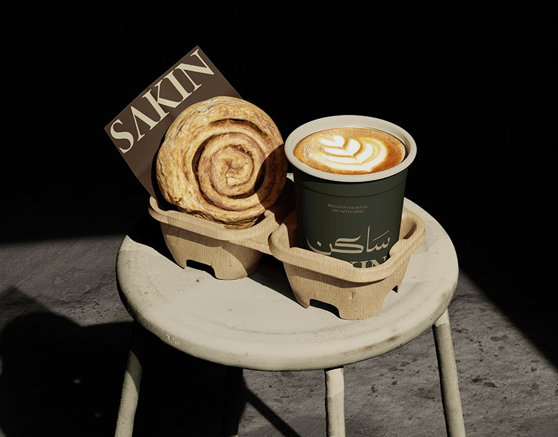
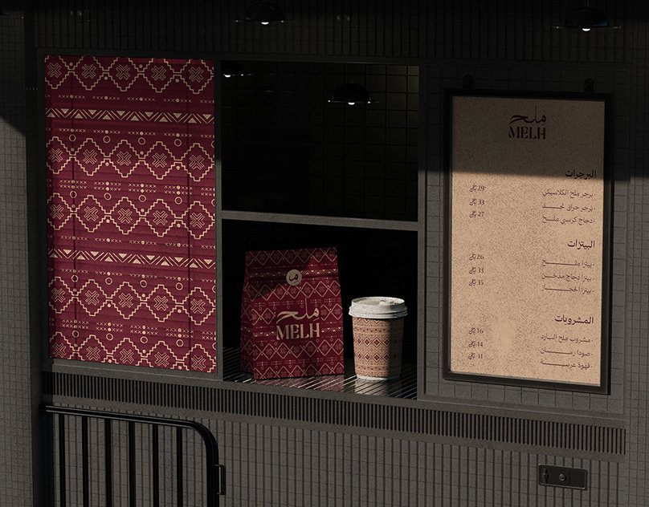

Brand identity designer
Strategy, identity & art direction
Based in Egypt
Working worldwide
Available for new projects
ZAKY
Identities with a point of view —
built to be remembered.
(01) — Approach
Strategy first, then craft. Every identity I make is

considered,
clear in every detail,
and is built to stay 
remembered.
(02) — Selected work
Case
studies.
Each project is a full story — the brief, the idea, and the system behind it.
(03) — Services
What I
do.
-
01
Brand Identity
Logo, type, colour and a full visual system that makes your business recognisable and ready to grow.
-
02
Logotypes & Marks
Distinctive wordmarks and symbols, drawn with care and built to work at every size.
-
03
Packaging
Packaging that carries the brand onto the shelf, the table and into people’s hands.
-
04
Creative Direction
A sharper visual language for launches, campaigns and social media — consistent everywhere it shows up.
(04) — Process
How it
works.
- 01
Discover
I learn the business, the market and the people it’s for.
- 02
Define
We agree on what the brand stands for, in plain words.
- 03
Direct
A clear creative direction before a single logo is drawn.
- 04
Design
The mark, type, colour and system — built to work together.
- 05
Deliver
Final files and guidelines, ready for every application.
(05) — About
I don’t just
design. I think.
I’m Mohamed Zaky — a graphic and brand designer with 5+ years of experience across Egypt, Saudi Arabia, Kuwait, the UAE, and international clients.
I combine strategy, art direction and craft to create identities that feel intentional — from the first impression to every application after.